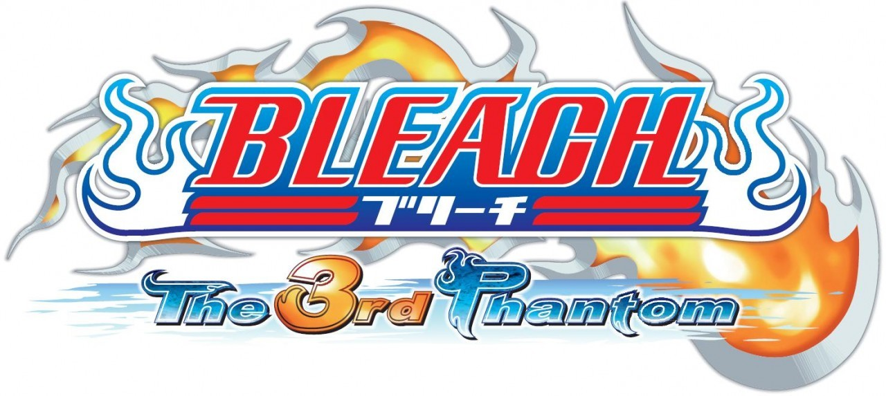

Bleach: The 3rd Phantom is a tactical role-playing game released on Nintendo DS, featuring 25 main chapters and a bonus tower with 30 floors to unlock additional characters.
By following this guide, you should be able to optimize your progression, distribute your stats well, and plan your gameplay strategy effectively. The game relies on good management of EXP, skills, and items, so don't hesitate to farm to achieve the best results!